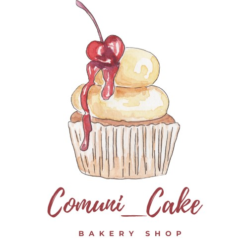

Sobre a Comini_Cake Bakery
Localizada no coração da cidade de Piracicaba Camuni_Cake Bakery traz para o mercado o que há de melhor para opaladar. Fundada em 2019, com profissionais com décadas de experiência no mercado, apresenta sabores tradicionais e inéditos.
Nossa missão é: "Proporcionar uma experiência de vida aos clientes".
Visando sempre a qualidade e o atendimento aos seus clientes, optou por oferecer seus produtos conforme demanda, não ficando produtos expostos e pré-fabricados, deixando assim, o Aroma e Sabor intactos, por estes motivo os pedidos devem ser realizados até as 18:00 para ser entregue no próximo dia até as 12:00 ou ser retirado em nosso endereço
Entre em contato conosco pelo telefone/whatsapp (01) 01010-01010 e faça já o pedido
Uma Breve História sobre o Cupcake
A primeira menção do cupcake que se tem notícia 1796, tendo sua primeira aparição em um livro de culinária chamado “american cookery” (ou culinária americana), escrito pela americana amelia simmons
No livro o doce aparece como “bolinhos para serem assados em pequenas xícaras”. Ou seja, o termo que conhecemos hoje em dia não foi usado desde o início, mas a ideia de um bolo em uma xícara sempre foi a mesma, apenas sendo complementada com o passar do tempo.
Após a primeira guerra mundial, o cupcake começou a ganhar popularidade pois as indústrias de pão passaram a fabricá-lo com mais frequência, mas ainda sem as conhecidas forminhas de papel que o acompanham. As formas surgiram somente ao fim da segunda guerra mundial, criadas pela james river corporation, antiga fabricante de balas para armas.
Porém, apenas em 1996 foi aberta a primeira loja de cupcakes em nova york, alavancando o sucesso do delicioso bolino e trazendo mais doçura e cores para as nossas vidas. Até os seriados de tv, como “sex and the city”, mostravam a todo minuto um cupcake.
Já no começo de sua chegada ao brasil, lojas especializadas em cupcake foram abertas e muitas docerias lançaram suas próprias criações para avançarem no concorrido mercado dessa novidade. A facilidade de transporte, o tamanho reduzido, a porção individual, a possibilidade de combinação de sabores e cores, as embalagens bonitas e decorações delicadas, tudo isso contribuiu para o enorme sucesso dos cupcakes no brasil.
Geralmente, no brasil, a massa apresenta um aspecto mais molhado e a cobertura adaptada ao paladar brasileiro, sem ser muito doce, como nos estados unidos e da inglaterra, em que os cupcakes apresentam massa seca e cobertura mais doce. Cada região tem seus sabores, suas frutas, as opções são diversas em um país tropical e repleto de possibilidades como o brasil.
Nosso estabelecimento
Nosso estabelecimento está localizado no coração da cidade de Piracicaba.
Benefícios
- Qualidade dos Produtos
- Opções de Sabores
- Entrega
- Profissionais Qualificados
- Pontualidade
- Limpeza